My writing at:
December 2019
1 Monolithic optoelectronic integration of gallium nitride transistor
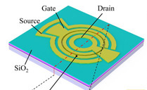
2 Hydrogen-terminated diamond transistors on gallium nitride/silicon
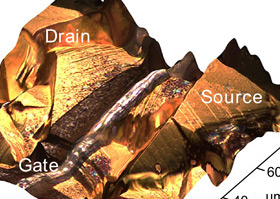
3 Toward photodetector arrays based on indium gallium nitride μLEDs
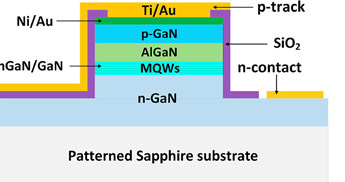
4 Gallium arsenide photodetector on thin germanium-on-silicon virtual substrate
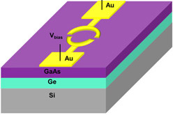
5 Thermal droop in indium gallium nitride light-emitting diodes
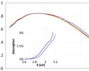
6 Indium selenide expands potential of 2D optoelectronic structures
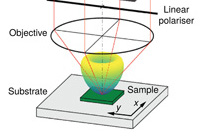
November 2019
1 Indium gallium nitride surface-emitting superluminescent light diodes
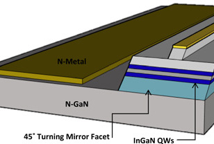
2 Boost to magnesium doping of gallium nitride on freestanding substrates
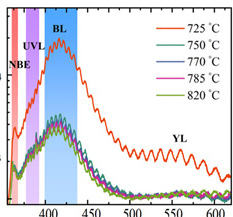
3 Electrochemical membrane release for aluminium gallium nitride devices
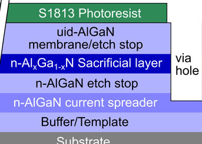
4 Self-aligned-gate gallium oxide metal-oxide-semiconductor transistors
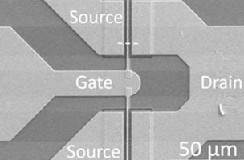
5 Record power density aluminium gallium nitride barrier transistors
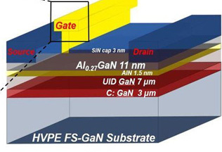
6 Deep UV aluminium gallium nitride laser diode at 271.8nm wavelength
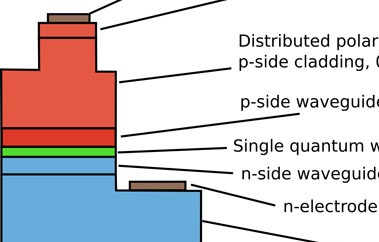
October 2019
1 Vertical gallium nitride light-emitting diodes on 4-inch silicon wafers
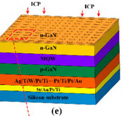
2 Silicon carbide 600V transistors comparable to silicon performance
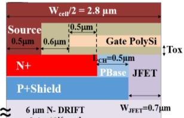
3 High-carrier-density two-dimensional hole gas in strained gallium nitride
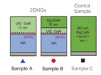
4 Extremely thin gallium nitride wells enable deep ultraviolet lasing
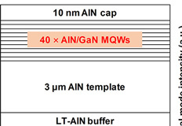
5 Indium phosphide template for laser and silicon-on-insulator integration
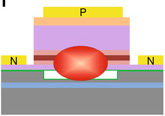
6 Improving metal-organic growth of aluminium nitride on silicon carbide
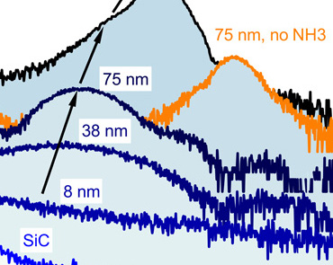
September 2019
1 Improving white light-emitting diode luminous efficiency and color rendering
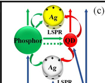
2 Gadolinium oxide gate insulation for gallium nitride channel transistors
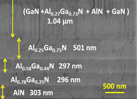
3 Indium gallium arsenide one-transistor dynamic random access memory
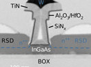
4 Silver nanoparticle boost to gallium nitride red light-emitting diodes
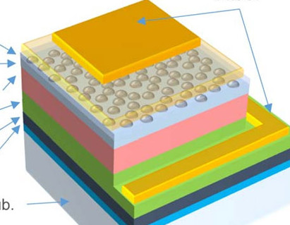
5 Reducing power losses in indium gallium nitride laser diodes on silicon
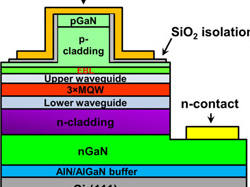
6 High-frequency indium aluminium nitride barrier transistors on silicon
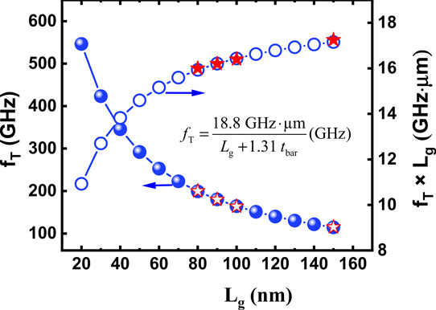
August 2019
1 Ferroelectric gate stack for normally-off gallium nitride power transistors
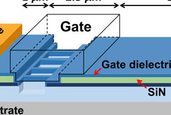
2 III-nitride superluminescent diodes on silicon for displays and communication
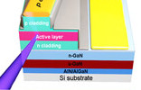
3 Reduced contact resistance aluminium gallium nitride channel power devices
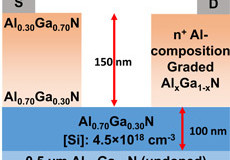
4 Vertical gallium oxide Schottky barrier diodes with improved performance
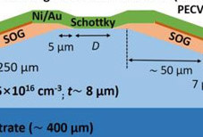
5 Wafer-level backside processing of high-frequency indium phosphide chips
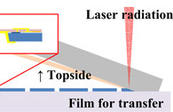
6 Monolithic alternating current indium gallium nitride light-emitting chips
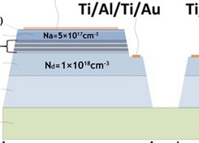
July 2019
1 High-power polarized-light vertical-cavity surface-emitting laser
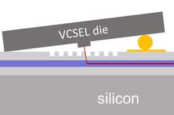
2 Indium arsenide and gallium antimonide fins on 300mm silicon
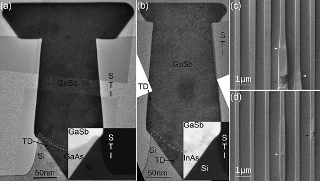
3 Electrically driven germanium-tin vertical-cavity surface emitter
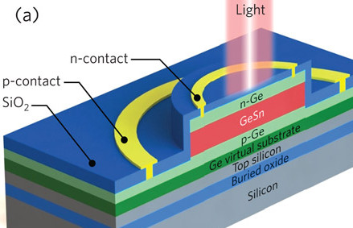
4 Annealing to tune output wavelength of quantum dot lasers on silicon
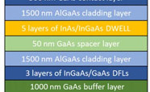
5 Thermal atomic layer etching of III-arsenide semiconductors
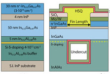
6 Increasing on-current in III-V transistors on silicon
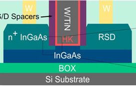
June 2019
1 Chromium/aluminium n-electrode for reflection boost of deep-ultraviolet LEDs
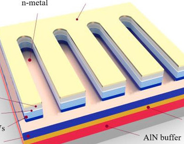
2 Achieving nitrogen-polar performance from gallium-polar growth
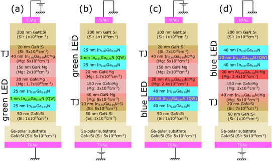
3 Conductive penetration of aluminium nitride buffers on silicon
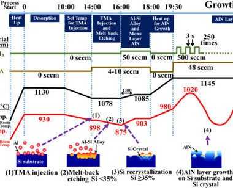
4 Ultra-low-power light-emitting diodes for Internet of Things and smart dust
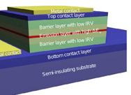
5 Gallium nitride quantum well high-electron-mobility transistors
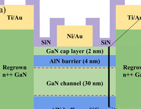
6 High-electron-mobility III-nitride on 3C silicon carbide template on silicon
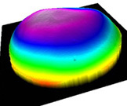
May 2019
1 Ultraviolet aluminium gallium nitride shell nanowire light-emitting diodes
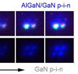
2 Indium gallium nitride platelets for green and red light-emitting diodes
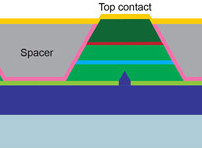
3 Pushing high-frequency transistor performance above 700GHz
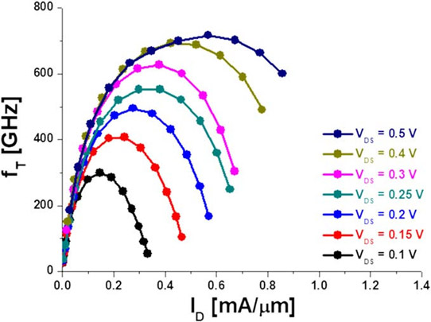
4 Nitrogen-polar gallium nitride current-aperture vertical electron transistor
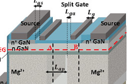
5 Split gate improves octagonal-cell silicon carbide MOSFET performance
 6 Developing III-nitride-on-silicon optoelectronic platform
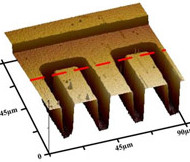
6 Developing III-nitride-on-silicon optoelectronic platform
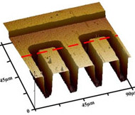
April 2019
1 Aluminium scandium nitride exhibits ferroelectric behavior
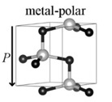
2 Gallium-doped zinc oxide transparent conductor for gallium nitride LEDs
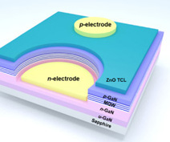
3 Diamond thermal management boosts gallium nitride transistor power
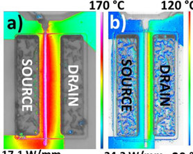
4 Distributed feed-back gratings for indium gallium nitride laser diodes
5 Graphene interlayer for deep ultraviolet LEDs on nano-patterned sapphire
6 Positive threshold in GaN transistors with p-type aluminium titanium oxide
March 2019
1 Eliminating waveguide propagation from III-nitride light-emitting diodes
2 Boosting extraction performance of ultraviolet light-emitting diodes
3 Indium gallium arsenide quantum well transistors on silicon
4 Curved mirror reduces threshold of gallium indium nitride vertical laser
5 Non-polar GaN-based VCSEL diode with nanoporous distributed Bragg reflector
6 First demonstration of RF N-polar GaN metal-insulator-semiconductor HEMT
February 2019
1 Selective-area emitter for gallium nitride bipolar transistors
2 Monolithic indium arsenide antimonide on silicon mid-infrared photodetector
3 First demonstration of fully vertical gallium nitride transistors on silicon
4 Vertical integration of gallium nitride nanowire transistor and light-emitter
5 Yellow light-emitting diodes with high wall-plug efficiency
6 Indium arsenide quantum dot laser diodes on on-axis silicon
January 2019
1 Gallium oxide prospects for high-voltage and high-power electronics
2 Multi-channel tri-gate III-nitride high-electron-mobility transistors on silicon
3 Reducing Schottky on-resistance in multi-channel III-nitride structures
4 Octagonal cell topology for high-frequency silicon carbide transistors
5 Graphene-enabled aluminium gallium nitride nanopyramid arrays on silicon
6 Boosting switching frequency in gallium nitride vertical fin transistors